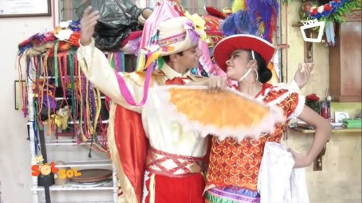
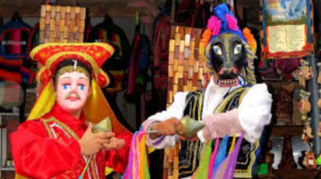
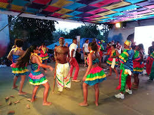
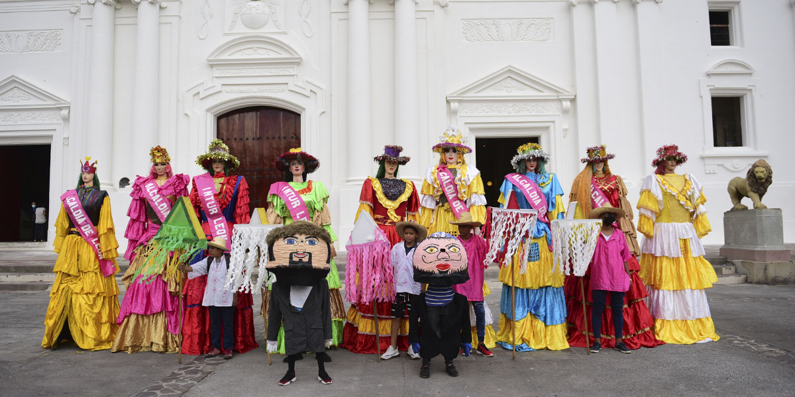
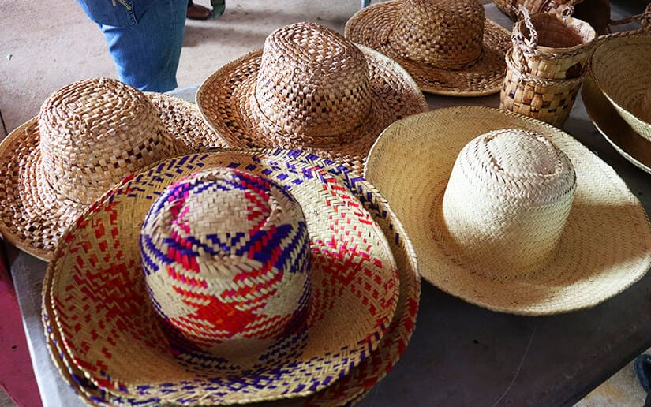

Trajes Tradicionales
Nuestra Indumentaria
Cada tejido cuenta una historia de mestizaje, resistencia y orgullo.

Traje de Güegüense

Vestimenta del Palo de Mayo

Vestimenta de La Gigantona

Cada tejido cuenta una historia de mestizaje, resistencia y orgullo.




